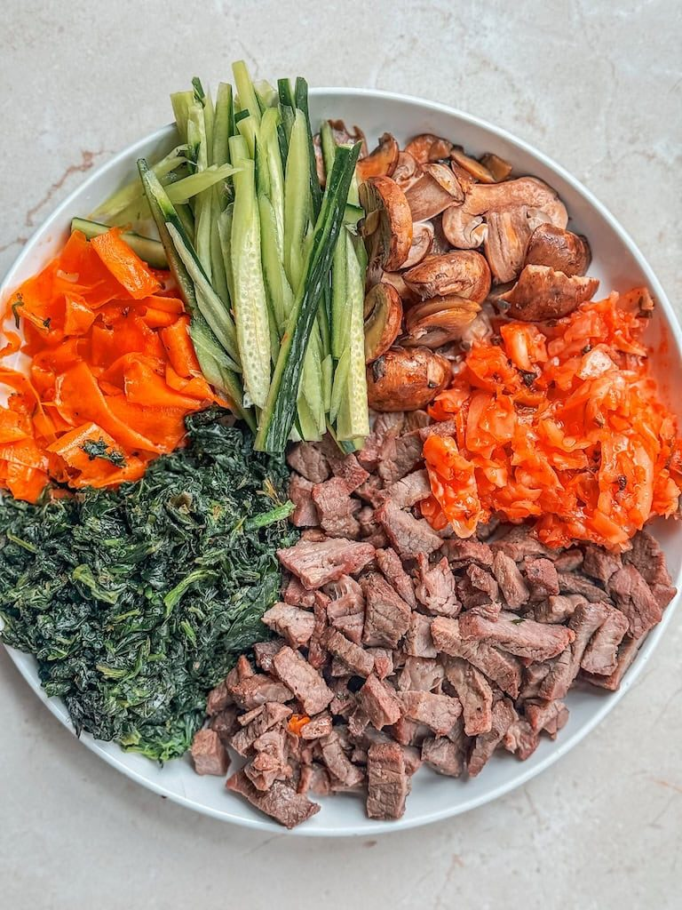
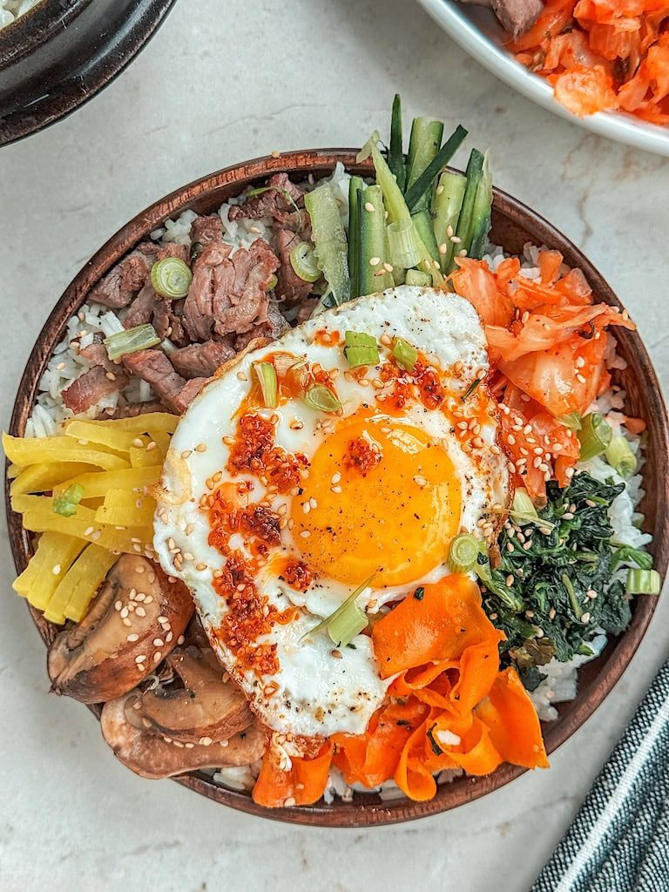
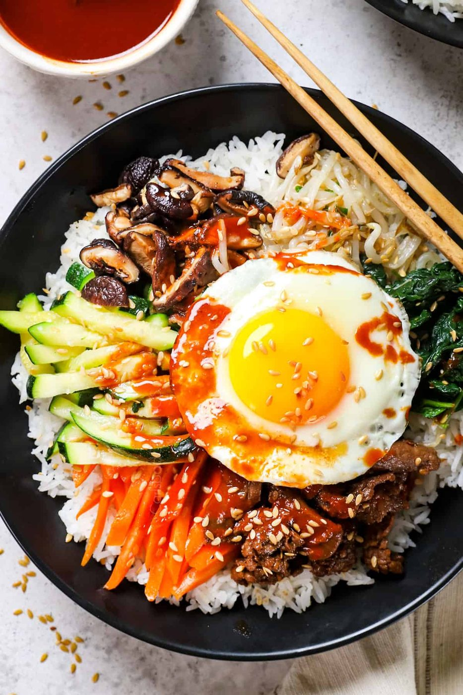
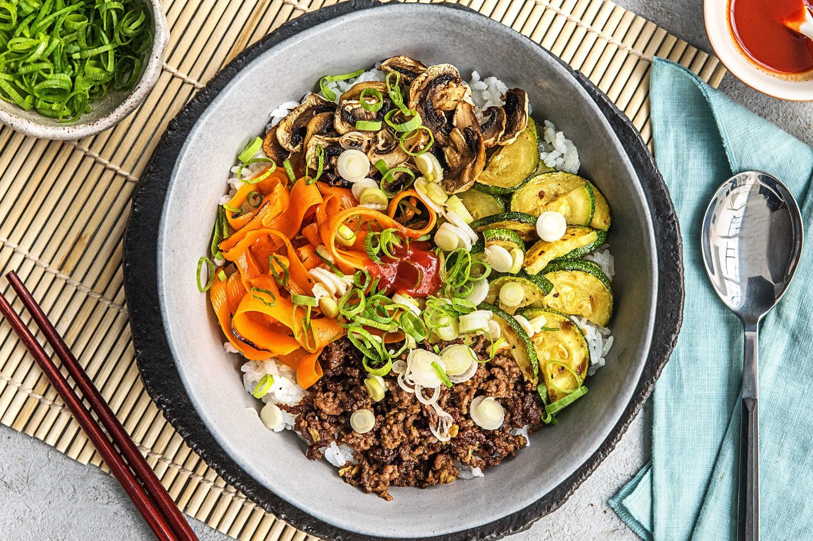
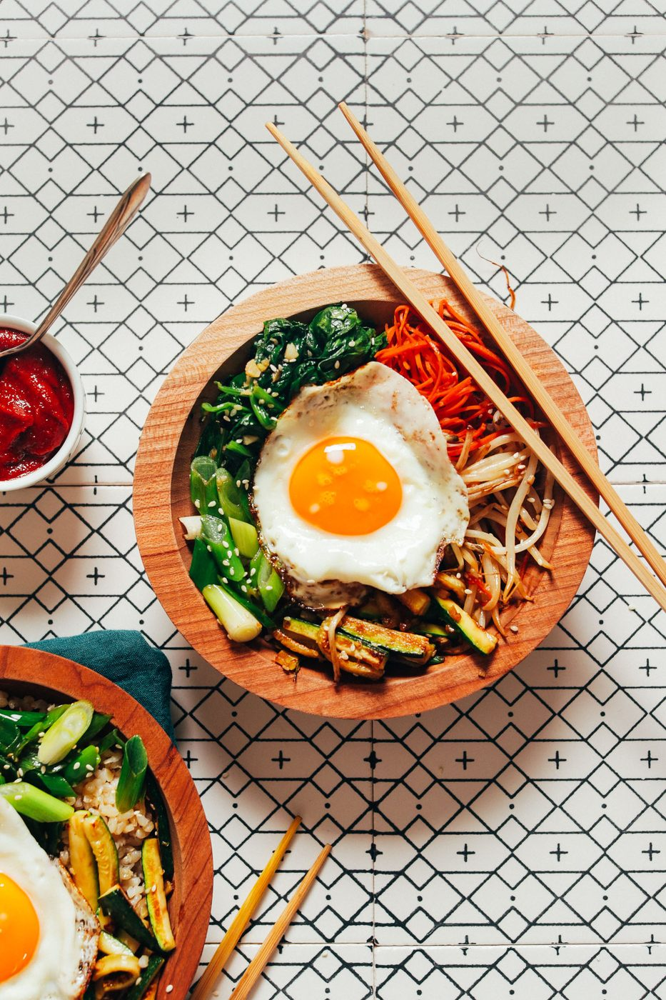
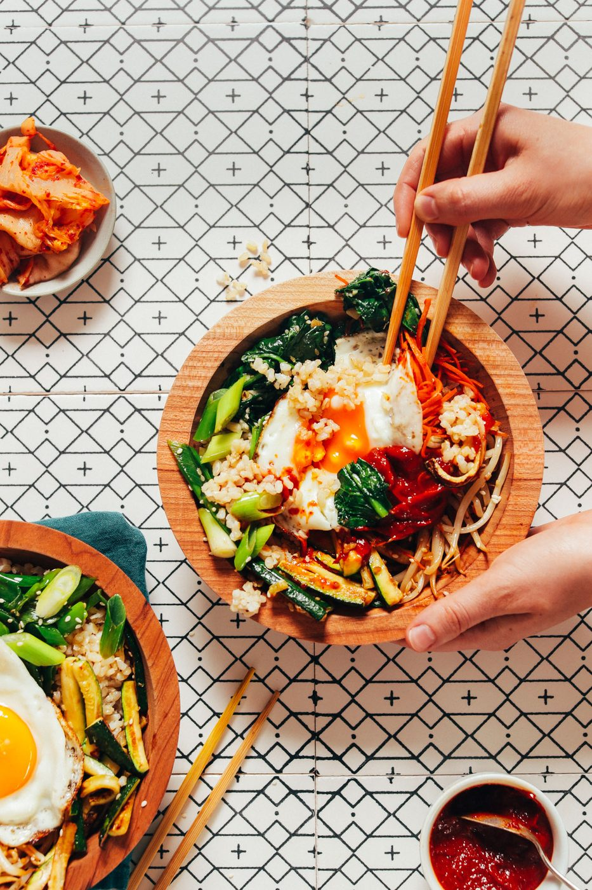
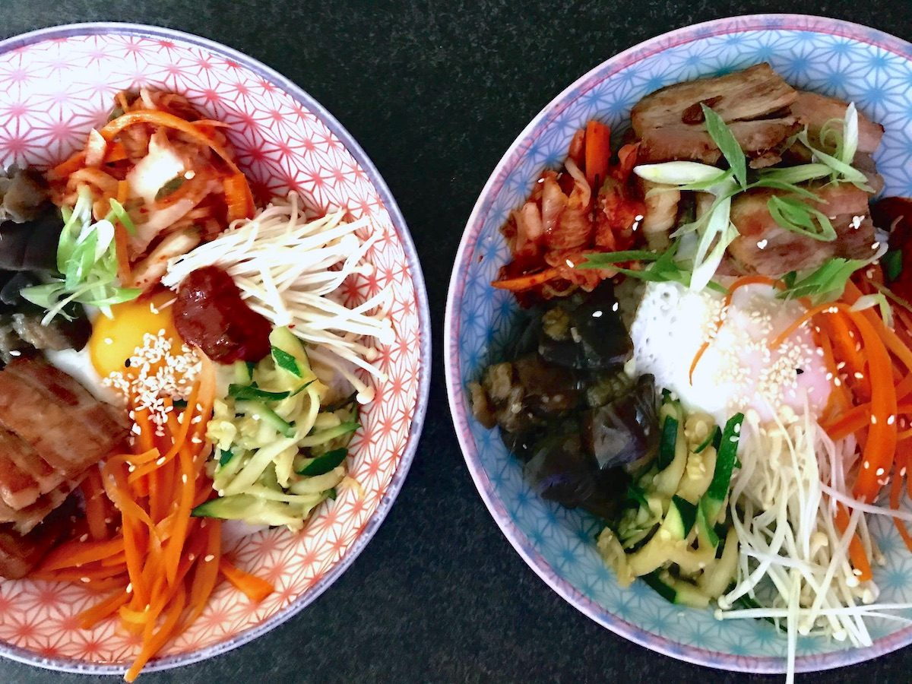

← Asian Kitchen
Bibimbap
A rice bowl of individually seasoned vegetables, a fried egg, and gochujang — then you wreck it all with a spoon.
A rice bowl of individually seasoned vegetables, a fried egg, and gochujang — then you wreck it all with a spoon.
Bibimbap means 'mixed rice', and the mixing is the point — but the magic happens before it: each vegetable is cooked separately and seasoned on its own terms. Spinach dressed with sesame and garlic. Bean sprouts with a whisper of chili. Carrots sweet and soft, mushrooms savory and browned. Nine little side dishes that become one giant one.
The bowl rewards two upgrades. First, a crackling rice bottom — either a hot stone bowl (dolsot) or a well-oiled skillet that toasts the rice against the pan while everything sits. Second, gochujang sauce loosened with sesame oil and a touch of sugar, painted across the top. Then the instruction the dish was named for: mix like you mean it, until every grain of rice has an opinion.
serves 4 — tick items off as you shop; it saves as you go
Blanch spinach, squeeze hard, dress with sesame oil, garlic, salt. Simmer sprouts, dress with sesame oil and a pinch of chili. Sauté carrots until sweet-soft, zucchini until just wilted, mushrooms until browned with a splash of soy. Everything gets its own moment — this is what separates bibimbap from a stir-fry pile.
Quick marinade of soy, sugar, sesame oil, garlic, 15 minutes. Sear hot until caramelized at the edges, 3-4 minutes.
Stir gochujang with sugar, rice vinegar, sesame oil and a teaspoon of water until it flows lazily off the spoon. Taste — warm, sweet, gently ferocious.
Hot rice in a warmed bowl, vegetables arranged in wedges around the center like a color wheel, beef in one wedge, fried egg on top. Sesame seeds. Paint sauce across the egg.
The whole show exists so you can destroy it in ten seconds. Fold everything through the rice — sauce reaches every grain. For the crackling bottom, let the bowl sit on high heat two more minutes before mixing and listen for the sizzle.







Images are web-sourced via image search and self-hosted. Original sources:
https://z-cdn.chatglm.cn/image-search-mcp/images-ppt/05837f5e0bb7.jpghttps://z-cdn.chatglm.cn/image-search-mcp/images-ppt/2e5e24faae9f.jpghttps://z-cdn.chatglm.cn/image-search-mcp/images-ppt/685ae8fc5812.jpghttps://z-cdn.chatglm.cn/image-search-mcp/images-ppt/7068b5505538.jpghttps://z-cdn.chatglm.cn/image-search-mcp/images-ppt/b6d903a30f99.jpghttps://z-cdn.chatglm.cn/image-search-mcp/images-ppt/ed2629710198.jpghttps://z-cdn.chatglm.cn/image-search-mcp/images-ppt/f9056b3ced6f.jpgVerified working videos — click a card to load the embed.


Powered by GitHub Issues — the backup kitchen. One issue per recipe; your comment lands in the repo.